01音樂表演 · Live★ 本週必去
日本祭2026「昭和浪漫 TAIPEI RETRO VIBES」
把 80 年代東京昭和街頭搬進信義：15 個日本出展單位、新潟燕市銅杯敲打體驗，週六 17:00 紅白歌手市川由紀乃開唱，入夜接 DJ。
線索：新聞＋官網核對・已核對官方頁
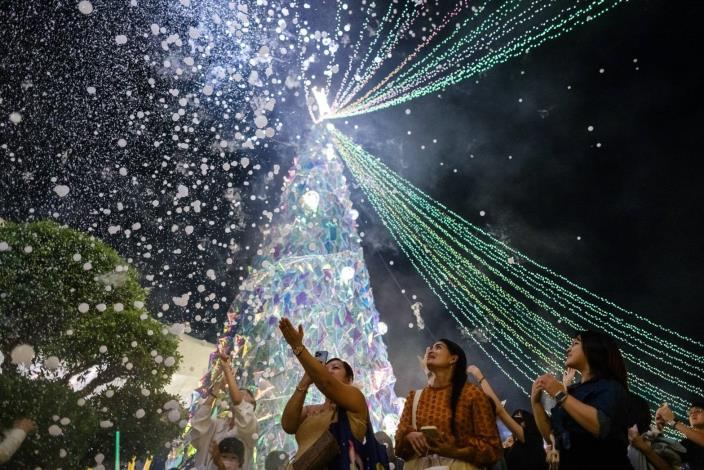
11/28（六） – 11/29（日）｜台北為主，其他城市值得專程去的也一起放進來。
把 80 年代東京昭和街頭搬進信義：15 個日本出展單位、新潟燕市銅杯敲打體驗，週六 17:00 紅白歌手市川由紀乃開唱，入夜接 DJ。
線索：新聞＋官網核對・已核對官方頁
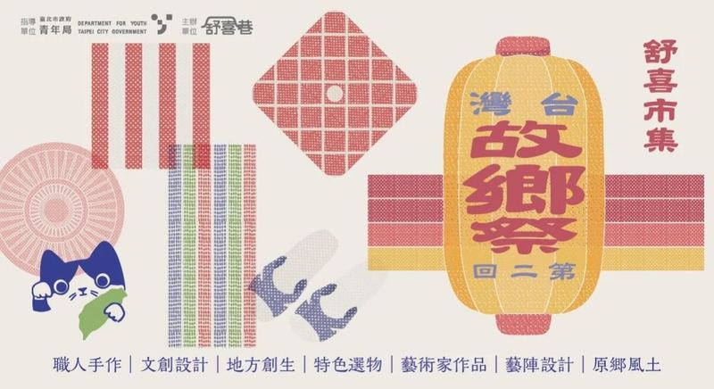
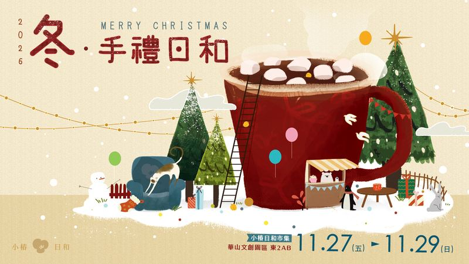
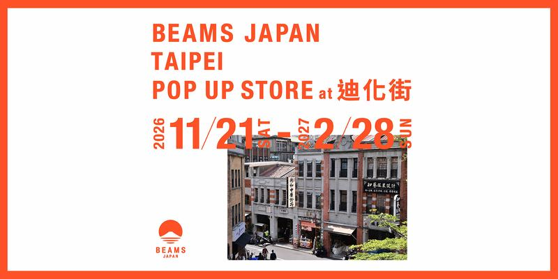
BEAMS JAPAN 首度進駐迪化街：台北限定 T 恤、10 週年畳縁系列，和連得堂煎餅、小草作、神農生活聯名的台灣限定品。
線索：@taipei.selected・已核對官方頁
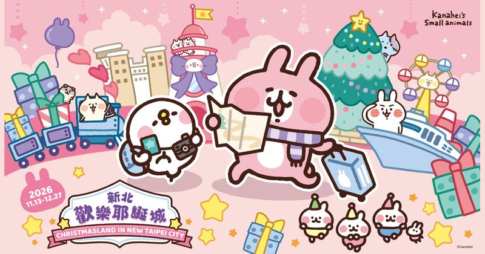
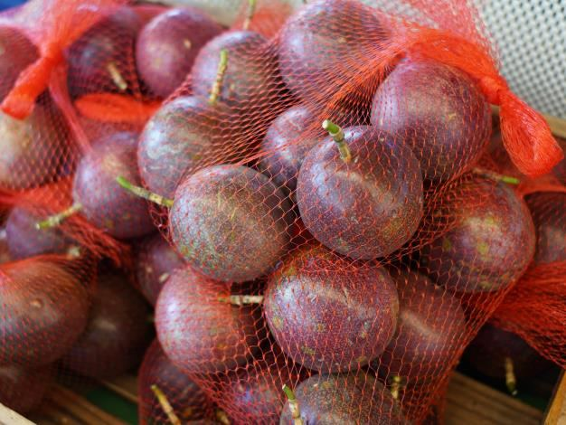
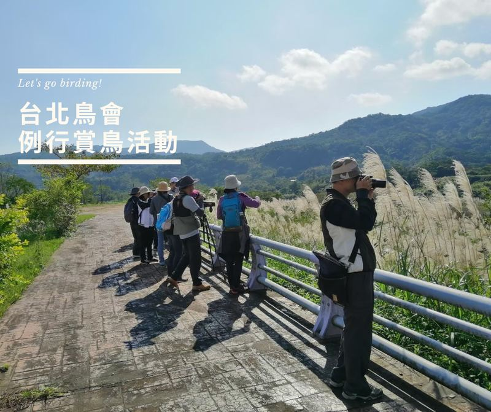
第四季預報表：週六金山清水濕地 4 km、約 40 種；週日芝山岩 2 km、約 25 種（捷運就到，最輕鬆），貢寮－雙溪 4 km、約 40 種。免費免報名。

5 米高蜜蜂蔔蔔裝置加花藝場景，阿信主理的 STAYREAL 冬季展，以「小小的種子，藏著大大的夢想」為題。


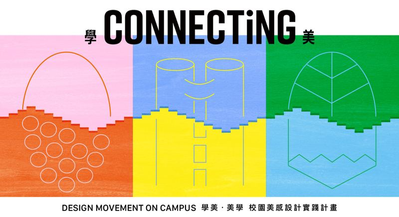
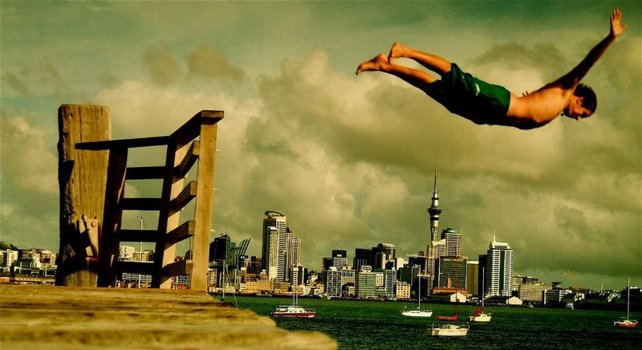


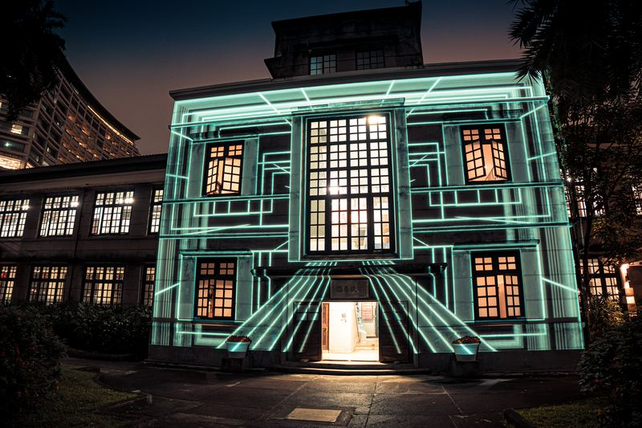


韓國插畫角色「今天什麼都不想做」先生進駐玻璃屋，週末作者 Heejae Cho 會到店簽名（時間另公告）。

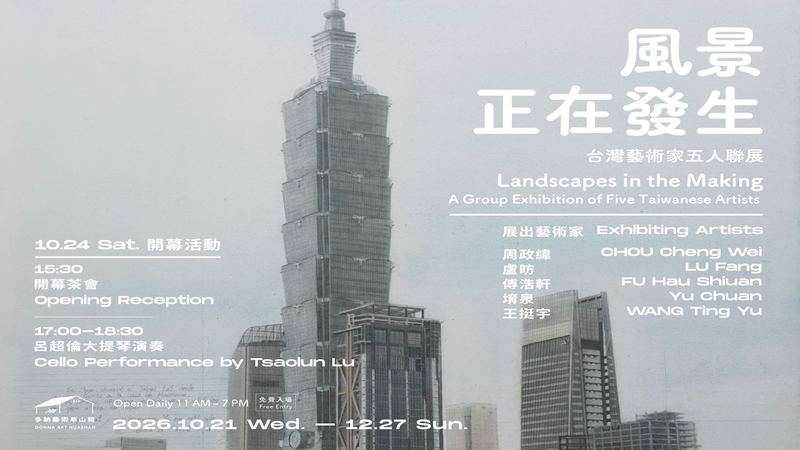

坂本龍一 7 件大型聲音裝置，北美館每天 17:00 後停止售票、免費參觀，本展仍要先在 OPENTIX 預約時段。
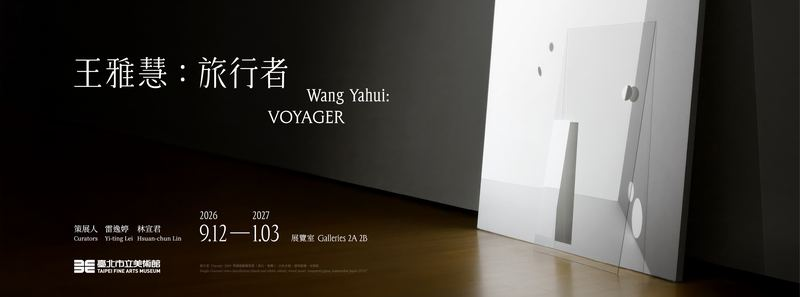

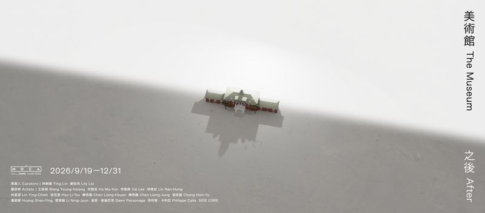
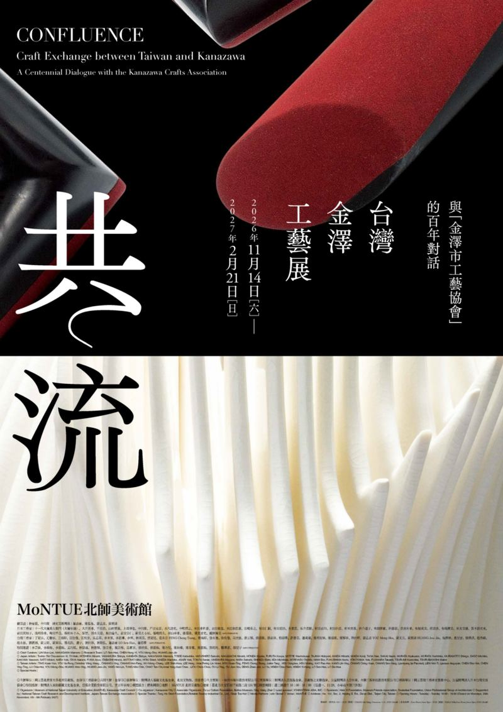
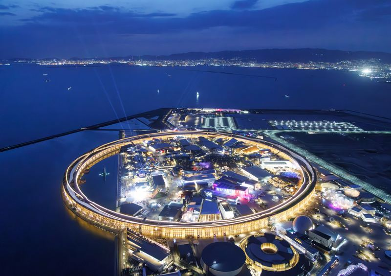
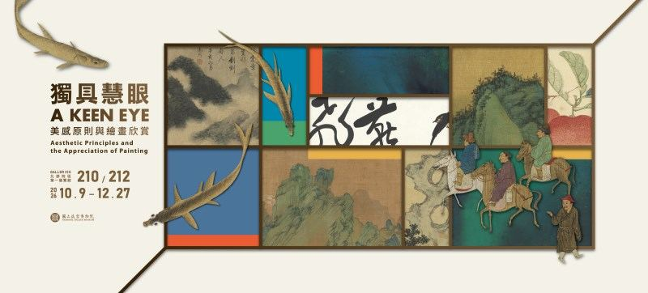
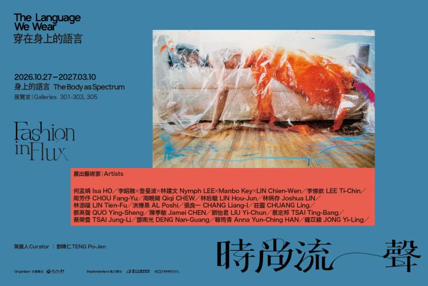

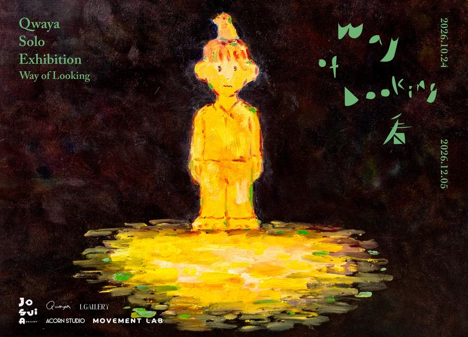
Jannabi《Legend》封面藝術家的 44 件畫作與陶瓷，配上發光星球和韓國家具，像走進他的工作室。

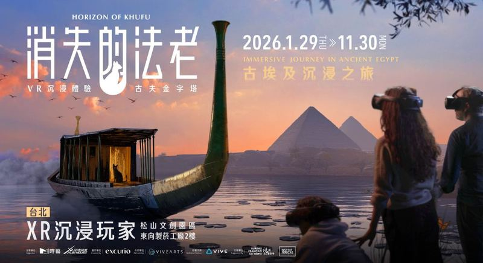
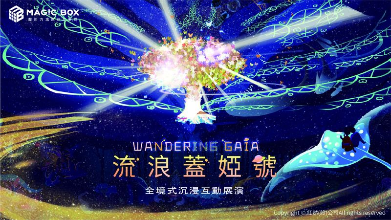

Rhizomatiks 創辦人真鍋大度海外首次大型個展，三件新作探討身體、感知和運算交織出的「關係時間」。
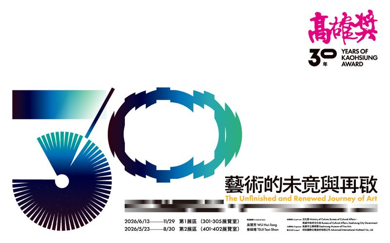
30 年 128 位得主裡精選 47 位的得獎作品，分三個十年篇章，看南方當代藝術怎麼變。11/29 收展。